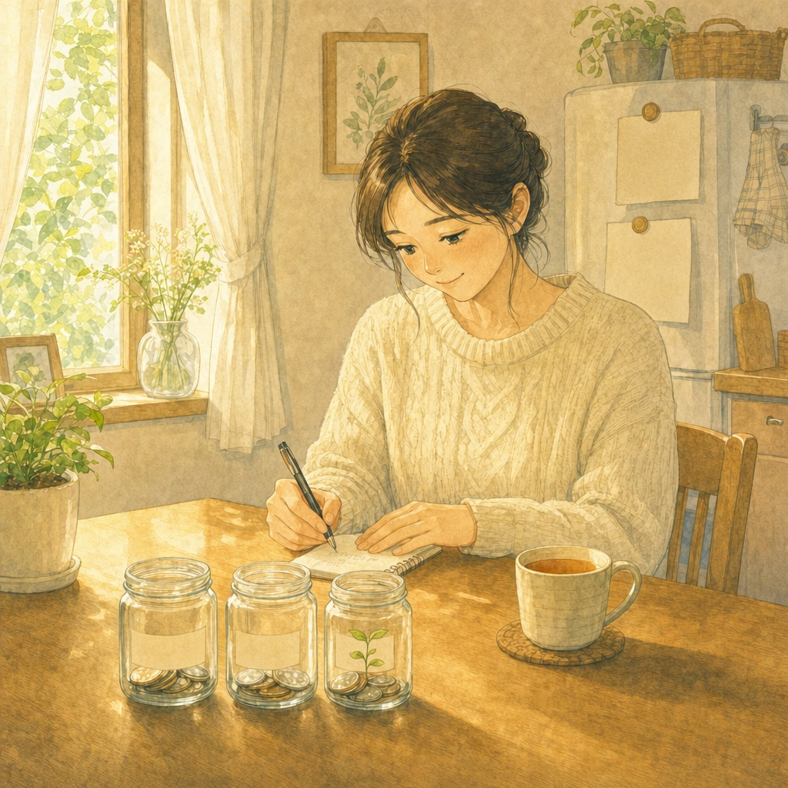
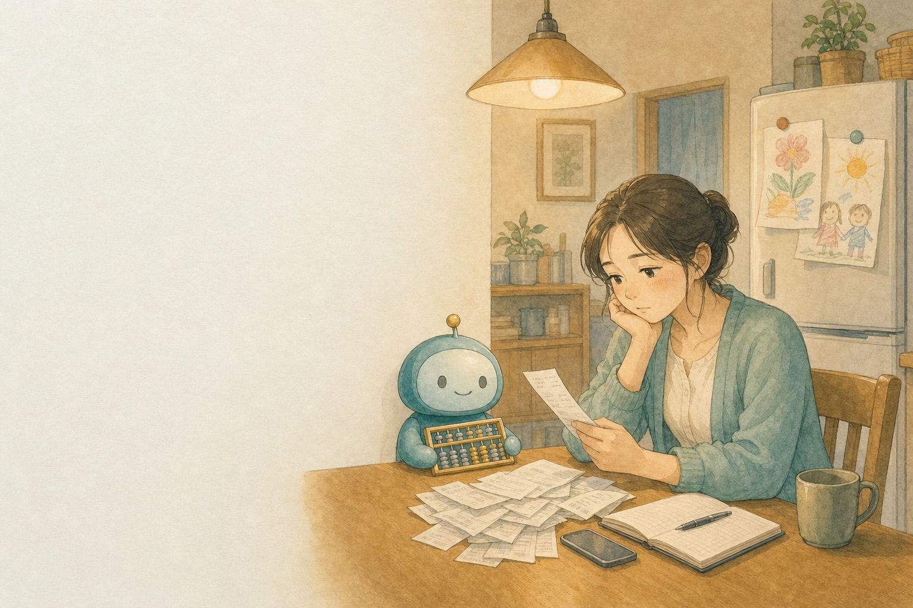
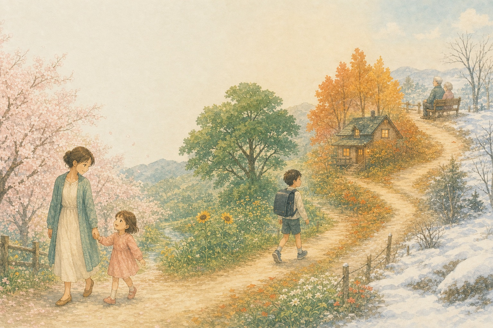
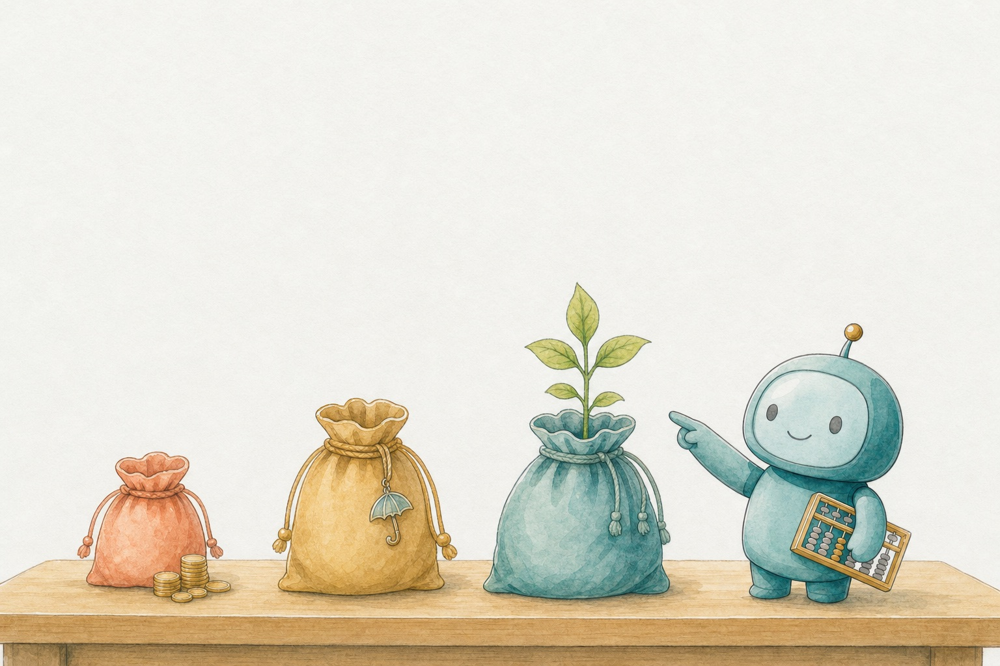
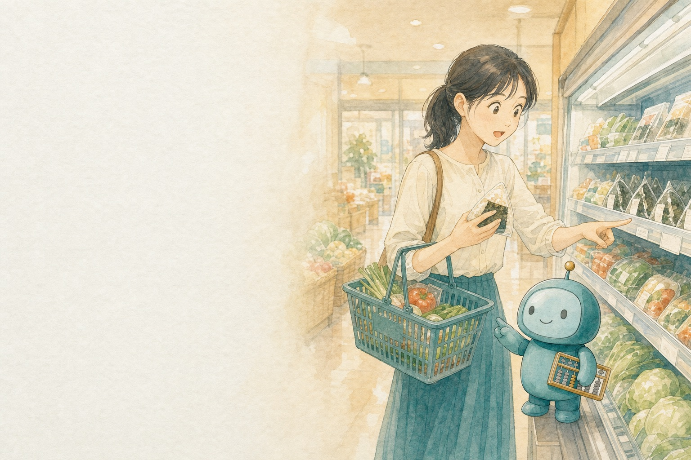
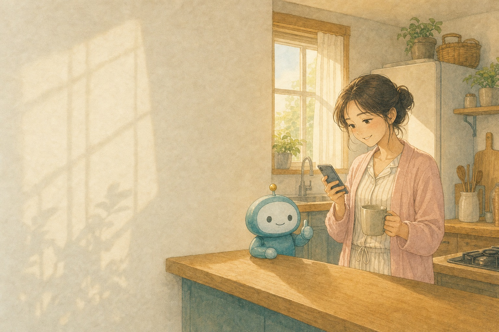
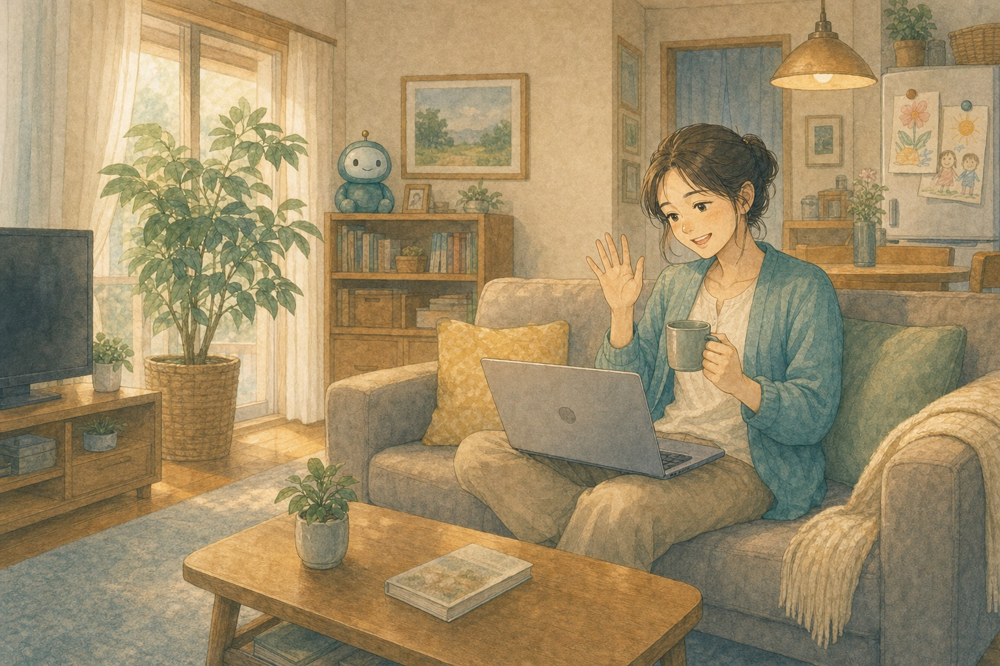
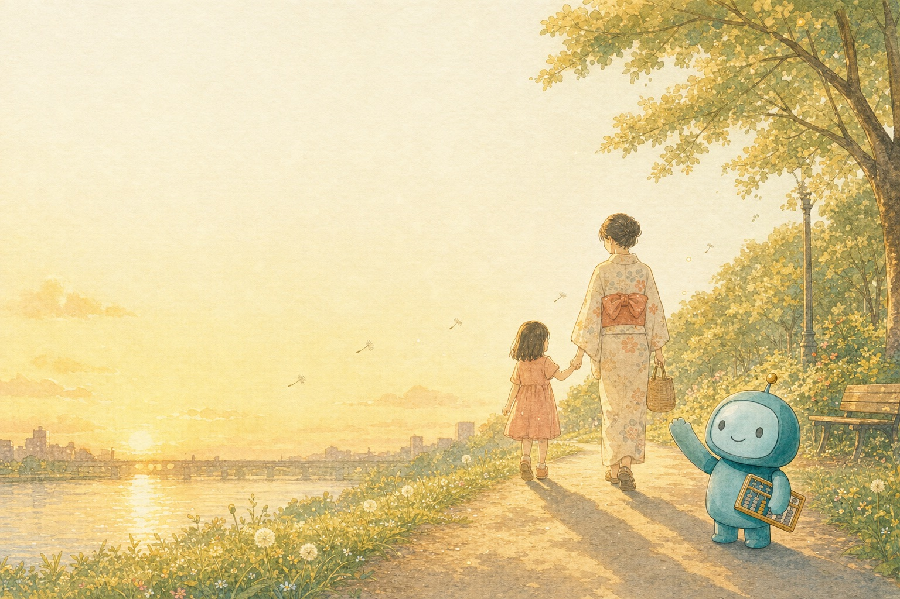

無料オンライン勉強会｜fulfull株式会社
貯金、このままで
足りますか。
さらっと30分の、お金の勉強会
お金の増やし方・守り方を、むずかしい言葉なしで。
後半は、ご希望の方だけ「うちの数字」で一緒に見てみます。
講師 fulfull株式会社 尾道

カメラオフ・ニックネームでOK
はじめに、1分だけ
fulfullのことを、動画でご紹介します。
動画の中で話しているのが代表の森川ですお金の相談・勉強会・企業研修をしている会社です。
今日の講師尾道です森川と一緒に、勉強会と相談を担当しています。
はじめる前に
今日の、3つのお約束。
1金額は、
口に出さなくてOK「だいたい」「多い・少ない」で大丈夫。数字は手元のメモにだけ。
2カメラオフ・
ニックネームでOK声だけで参加できます。ご家族やお子さんが横にいても大丈夫。
3わからないことは、
その場で聞いてOKむずかしい言葉は使いません。チャットでも、声でも、途中でどうぞ。
紙とペン、またはスマホのメモをご用意ください。
自己紹介
尾道です。
広島出身3児の母
ブラック企業秘書フリーランス二拠点生活
投資は6万円から初トレ＋250円
好きなことを仕事にVoicyふるふる学びが楽しくなる
全部、自分の選択。

まずは、チェックから
こんな気持ち、
ありませんか。
習い事や進学で「うちは無理」と言いたくないやりたいことを、お金のせいで諦めたくない
学費の時期と、自分たちの老後が同時に来る親のことと、自分の老後が同時に来そう
新NISA、口座は作ったけれど、そのまま
年金だけで、毎月いくら足りないのか分からない
物価が上がって、貯金が減っている気がする
貯金の置き場所を、誰にも相談できない
当てはまる番号を、チャットに数字だけどうぞ。
前半は勉強会、後半は「うちの場合」。
前半｜約30分さらっと、お金の勉強会
- 知る → 分ける → 始める
- むずかしい言葉は使いません
持ち帰るもの
うちの「足りない数字」お金を分ける3つの袋明日からの一歩
まずは、ひとつだけクイズです
1日100円（月3,000円）を30年。
年5%で育ったら、いくらになるでしょう？
貯金箱に入れただけなら
108万円
同じ100円でも、置き場所で倍以上に。
一定の利回りが続いたと仮定した計算です（税金・手数料は含みません）。実際の運用では、増えたり減ったりします。

1｜いくら貯めれば安心？
人生の「お金が要る時期」を、並べてみる。
ゴール−いまある分＝足りない分
いま貯金・収入・
毎月の残り
◯年後｜教育費習い事・進学・
ひとり暮らし
◯年後｜親のこと帰省・介護の
行き来
◯年後｜住まいローンの金利が
上がったら？
◯年後｜住まい更新・住み替え。
老後も借りられる？
65歳〜｜老後30年近く、毎月
いくら足りない？
例｜老後のひと月
年金だけだと、毎月いくら足りない？
夫婦の年金は月20〜23万円前後、生活費は月22〜28万円ほどが一般的な目安です（総務省「家計調査」）。平均寿命は男性81歳・女性87歳（厚生労働省「令和4年簡易生命表」）。
ひとり暮らしの例は、65歳以上の単身無職世帯の平均（支出 約16.2万円・年金など 約12.2万円）を丸めた目安です（総務省「家計調査」2024年）。平均寿命は男性81歳・女性87歳（厚生労働省「令和4年簡易生命表」）。

2｜お金を、3つの袋に分ける
お金は、使う時期で分ける。
もしもの袋生活費の3〜6か月分
近い将来の袋5年以内に使うお金
（教育費・車など）（住み替え・車など）
長く育てる袋10年以上
使わないお金
3｜まずは何から始めるのが正解？
あわてない順番があります。
ここから1STEP 1
もしもの袋を
つくる
口座を分けるだけでもOK
2STEP 2
近い将来の袋を
分ける
使う時期が決まっているお金
3STEP 3
残りを
長く育てる
ここで初めて新NISAなど
いきなり「増やす」から始めると、急な出費のたびに取り崩すことに。
貯金ゼロ・赤字でも大丈夫。STEP 1から、そのままの数字で始めます。
4｜新NISAのきほん
新NISAは、「長く育てる袋」の入れ物。
| つみたて投資枠 | 年 120万円 |
| 成長投資枠 | 年 240万円 |
| 一生で使える枠 | 1,800万円まで |
- 増えた分に、税金がかからない
- いつでも引き出せる
- 元本保証はなく、増えたり減ったりする
投資するかは、自分の数字を見てから決めればOK。口座だけの方は、後半で一緒に確認を。
時間を味方にする
月1万円を30年。差がつくのは後半から。
5年10年15年20年25年30年
貯金だけ（積み立てた元本）年5%で育った場合
30年後、貯金だけとの差
＋472万円
増えた分がまた増える「複利」は、続けた年数ほど効いてきます。
一定の利回りが続いたと仮定した計算です（税金・手数料は含みません）。実際の運用では、増えたり減ったりします。

5｜物価が上がる時代
おにぎり1個、
いくらでしたか？
10年前
（2016年）いま
（前後）10年後は？
（仮定）
貯金だけだと、金額は減らなくても
買える量が減っていく。
いまは2025〜26年の店頭価格の目安（税込）。10年後は予測ではなく、10年で約1.8倍のペースが続いたと仮定した計算です。
袋ごとに、置き場所を変える。
もしもの袋すぐ出せる場所普通預金など。増やすより、いつでも使えることを優先。
近い将来の袋減らしにくい場所定期預金や個人向け国債など。使う日まで、元本を守る。
長く育てる袋時間をかける場所新NISAなど。途中の上げ下げに、あわてない。
全部を預金に → 物価に負ける
全部を投資に → 使うときに減っているかも
6｜ちょっと休憩
お金が残らない家の、よくある習慣。
1「ポイント10倍」で、予定になかったものを買う
2ATMの手数料を、毎月なにげなく払っている
3セールになると「必要だった気」がしてくる
4クレカの請求メールが来ると、祈る気持ちになる
5「今日は節約」と言いつつ、金額はいつも通り
6「貯金してるよ」と言うけれど、使い道はなんとなく
いくつ当てはまりましたか？ チャットに数字だけどうぞ。
7｜大切なお金を守る
SNSの「簡単に増える」に、近づかない。
!「必ず」「確実に」「元本保証で高利回り」
!「月◯%」など、ありえない高い利回り
!「今だけ」「残りわずか」と急がせる
!人を紹介すると、報酬がもらえる
!有名人の名前や写真を使った投資の広告
!SNSで知り合った人が、個人名義の口座に振り込ませる
迷ったら、その日はお金を動かさない。家族か、誰かに一度聞く。

明日から、やってみる
5分でできることから、
ひとつだけ。
数字を、家族に見せる
「うちの足りない数字」を夕食のときに数字を、目に入る場所に
「わたしの足りない数字」をスマホのメモの1行目に
口座を、ひとつ分ける
「もしもの袋」用の口座をネットでつくる
積立を、月3,000円から
1日100円からでも、始めた人の勝ち
完璧じゃなくていい。始めた日が、いちばん早い日。

前半はここまで。おつかれさまでした
ここからは、
うちの数字で
見てみましょう。
ひとり10〜20分数字はだいたいでOKその場で一緒に計算
ご予定がある方は、ここで退出して大丈夫です。
ご参加ありがとうございました。
3つだけ、教えてください。
Q1いちばん気になる
お金は？
教育費老後住まいもしも親のこと
Q2それは、
何年後？
5年以内10年くらい20年以上
Q3毎月、回せそうな
額は？
3,000円1万円3万円〜
選ぶだけでOK。金額を口に出しにくいときは、チャットで個別に送っても大丈夫です。
その場で計算
一緒に、数字を入れてみましょう。
入れるもの
- 何のためのお金？
- いくら・何年後？
- いまある分と、毎月の積み立て
→
わかること
- ゴールに届く、毎月の額
- 30年の伸び方のグラフ
- 3つの袋の分け方
今日のしめくくり
わたしの一歩を、メモに書く。
わたしの一歩
いつやる？月日
毎月円から
家族に話す日見直す日月日
やってみたら、LINEで「やった！」と一言どうぞ。全力で応援します。
今日いろいろ話してきて
もっと深く、聞いてみたいところは
ありましたか？
1「足りない数字」を、もっと正確に
23つの袋に、いまのお金をどう分けるか
3新NISAの、口座の作り方・選び方
4物価に負けない、お金の置き場所
5病気や、働けなくなったときの備え
6教育費の時期と、いくら要るか老後の住まいと、親のこと
番号でも、ひとことでも。チャットでどうぞ。

では、そこを次回じっくり
次の相談、
いつにしましょう？
次回は、いま選んだところから今日の数字をもとに、もう一歩くわしく一緒に見ます。
一緒に考えますよ！オンラインで30分。カメラはオフのままでも大丈夫です。
来週2週間後1か月後ボーナスの前に
本勉強会は情報提供を目的としたものであり、個別の投資判断・税務等の助言を行うものではありません。